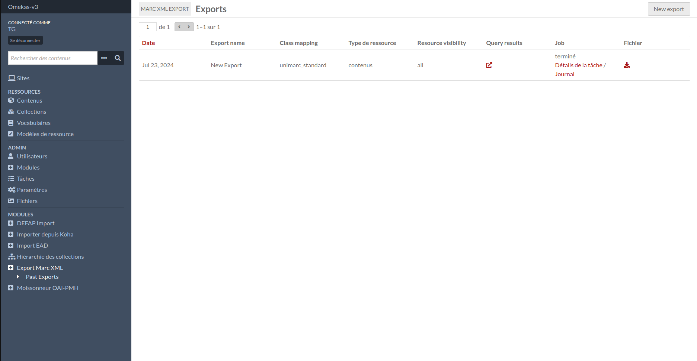

Fonctionnalités
Pour retrouvez vos fichiers ou voir vos exports précédents rendez vous à la section correspondante Exports passés.
(Admin > Export Marc Xml > Exports passés)
Sur cette page vous avez un résumé détaillé de vos exports avec la possibilité de télécharger vos fichiers.
Voir aussi la page des tutoriels Tutoriels